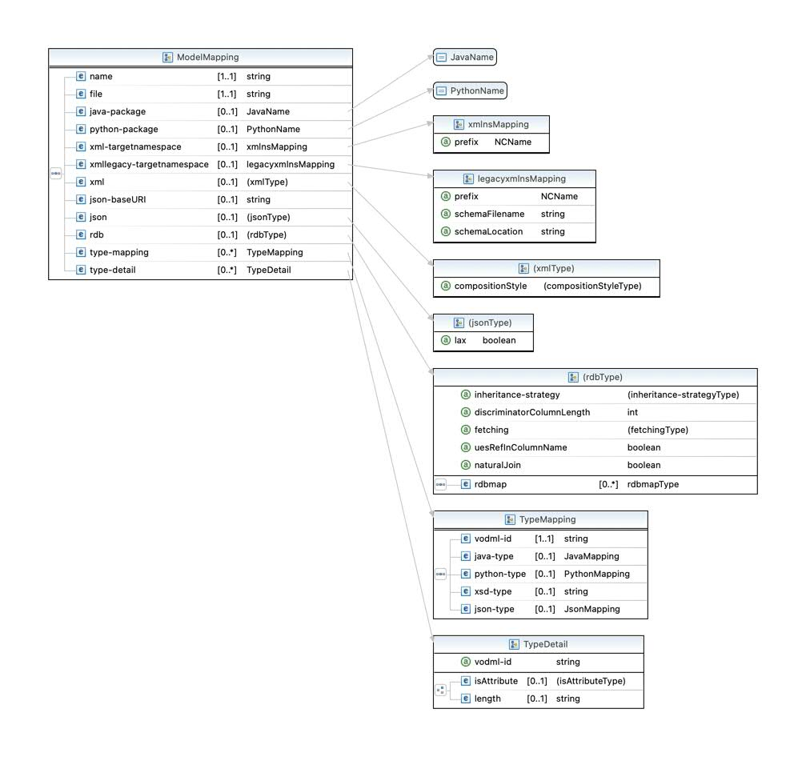

Binding
When generating various products from the VO-DML there is often a choice to be made in translating the VO-DML into a concrete representation - the definition of these choices is called binding.
The mechanism for specifying the binding is via an XML file that conforms to the binding schema. A visual representation of the main part of the schema is shown below 
The binding file can contain bindings for multiple VODML models, so the overall structure is
<m:mappedModels xmlns:m="http://www.ivoa.net/xml/vodml-binding/v0.9.1">
<model>
<name>a</name>
<file>a.vo-dml.xml</file>
</model>
<model>
<name>b</name>
<file>b.vo-dml.xml</file>
...
</model>
...
</m:mappedModels>
<model> element corresponds to the ModelBinding type in the diagram above.
Basic code generation parameters
<java-package>specifies the base Java package for generated code (packages in the VO-DML will create further sub-packages under this).<python-package>specifies the base Python package.<xml-targetnamespace prefix="...">specify the XML namespace and prefix for the xml serialization of the model instances.<json-baseURI>allow the base URI for the JSON schema to be modified.
Type mapping
It is possible (and indeed necessary for primitiveTypes) to map a VO-DML type to a specific type in the various languages/serializations that the VO-DML tooling can generate.
An example of the binding is given below for the primitiveType ivoa:real
<type-mapping>
<vodml-id>real</vodml-id>
<java-type jpa-atomic="true">Double</java-type>
<python-type built-in="true">float</python-type>
<xsd-type>xsd:float</xsd-type>
<json-type built-in="true">number</json-type>
</type-mapping>
It is possible to map DataTypes too, although they will most likely need to be mapped to a hand written type in the target language.
The binding file for the base IVOA model shows extensive use of the type mapping features, where it is possible to ignore the automated code generation entirely and substitute hand-written code.
Stylistic options
XML serialization
isAttribute
when serializing to XML, whether the VO-DML attribute is serialized as an XML attribute - the default is to serialize as XML elements.
compositionStyle
in the XML serialization this determines whether compositions with multiplicities greater than 1 should have a wrapper element - the choices are
- wrapped
- unwrapped
and the default is wrapped.
packageHandling
This controls how VO-DML packages are translated into XML namespaces and names - the options are
- qualified (the default)
- ignore
In both cases the base namespace of the XML serialization is controlled by <xml-targetnamespace prefix="..."> and this option then controls how names are created in this namespace - the "qualified" option means that the names are created by prefixing the VO-DML package names to the VO-DML type names using "." as a separator - the "ignore" option simply used the VO-DML type names without any package prefixes (note that this might result in errors if all names within the model are not unique).
JSON serialization
lax
whether definitions in the schema model should be "closed off" with "additionalProperties": false - if a type definition is expected to be extended, then this cannot be done.
The default is false which indicates that types should be "closed off".
In general if a model is expected to be used as a "base model" then this should probably be set to true for the model.
RDB mapping for TAP schema
There are various stylistic choices that can be made about how to map a VO-DML model to a relational database. The binding makes these choices concreate for a particular model.
Schema
If present then the generated tables will be put in the given schema - otherwise the default is to put the tables in a schema with the same name as the model.
Inheritance Strategy
This can either be * joined * single-table
If joined then each sub-type creates a separate table to store its unique attributes. In contrast the single-table strategy has a single table with columns for all of the attributes in the whole class hierarchy. In this second case there needs to be a discriminator column which can have its size specified with discriminatorColumnLength
NaturalJoin
If true then primary keys will have a name that includes the table name so that natural joins might be made - otherwise the default is that surrogate primary keys as just called ID.
uesRefInColumnName
if true the column name for a reference will use the referred name in some way (dependent on naturalJoin) rather than simply using the member name as the column name
listConcatenationDelimiter
When an attribute has a multiplicity > 1,which is not a favoured model design, but can be supported in the case where the attribute has a simple string representation, then the RDB serialization can be a single column of a delimited string - this attribute allows that delimiter character to be specified for the whole model.
Mapping individual types
It is possible to alter the mapping of individualTypes
- tableName - the name of the table can be explicitly changed from the default of being the same as the VO-DML name.
- noTableWhenInComposition - when true, if the type is involved in a composition where maxOccurs = 1 a separate table is not created, but instead it is treated similarly to a DataType - the default is false.